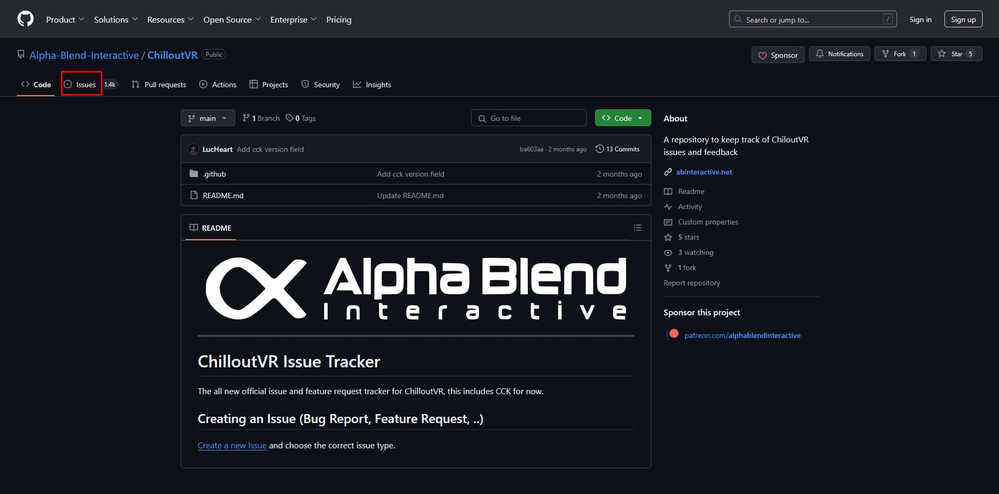
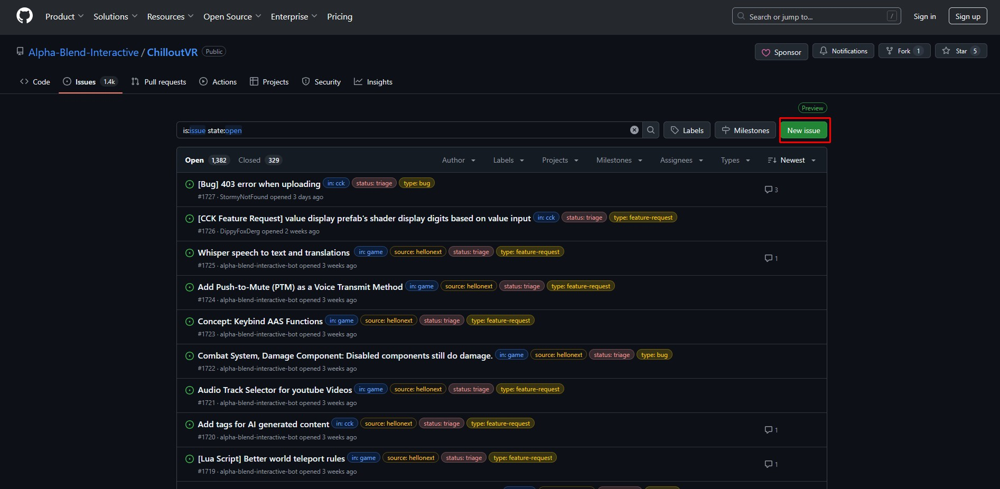
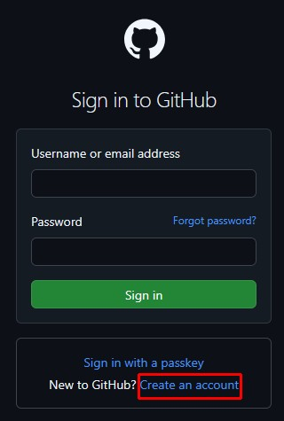
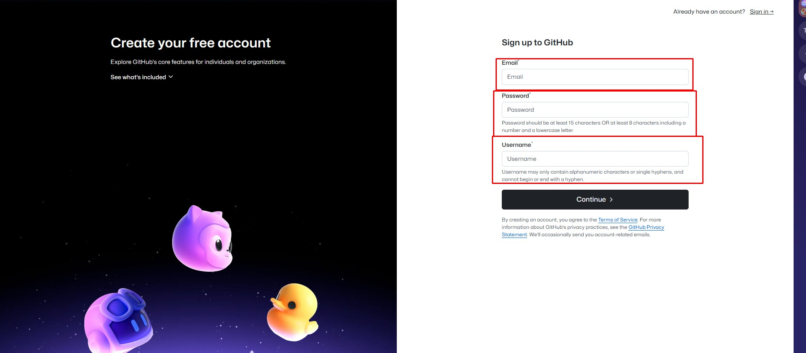
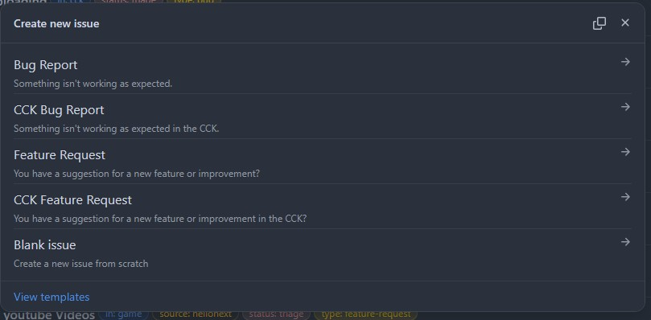
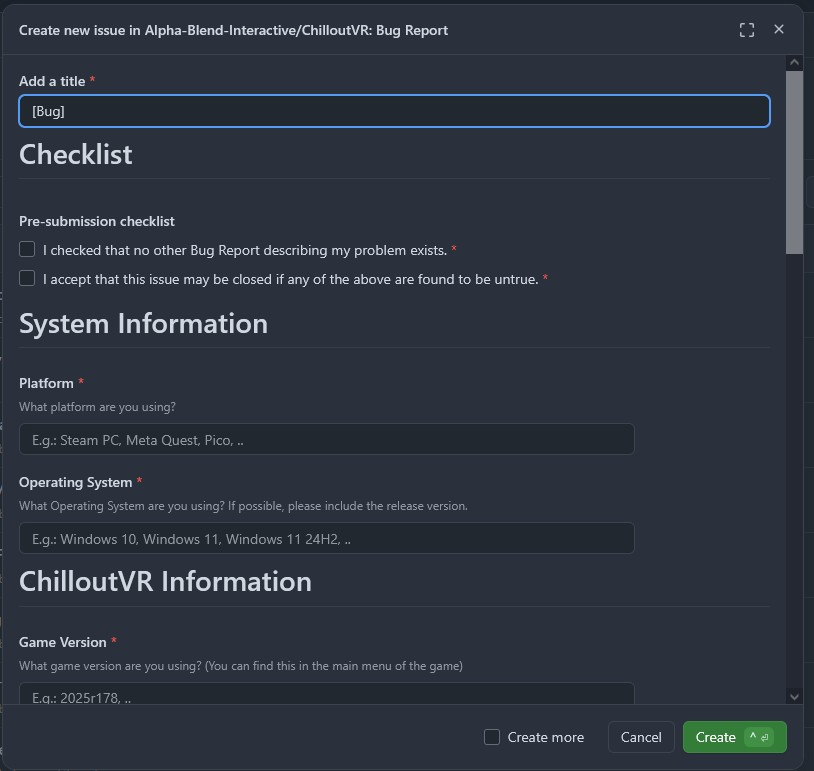

CVR Unofficial Guide to Feedback and Bug Reporting
Trust me, it's a lot easier than it looks.
Note: on GitHub, an "issue" is essentially a feature request, bug report, feedback, etc.
Step 1
Go to the official GitHub page for ChilloutVR using this link:
https://github.com/Alpha-Blend-Interactive/ChilloutVR
Step 2
You should see a webpage similar to the following.
Click the button I've highlighted in red to navigate to the issues page.

Step 3
You should see a webpage similar to the following.
Click the button I've highlighted in red to open a new issue.

Step 4
If you're not logged in, you'll see a webpage like this:

Click the button highlighted in red to create a new account if you don't have an account with GitHub.
If you are logged in, skip to step 6
Step 5
You should see a webpage similar to the following.
Enter a valid email address, (such as the one from your account on ChilloutVR) and pick a username. (such as the one from your account on ChilloutVR)

Step 6
Once you are logged in, repeat steps 1 through 3.
You should see a webpage similar to the following.

Select Bug Report if something in the game isn't working as expected.
Select CCK Bug Report if something in the Content Creation Kit isn't working as expected.
Select Feature Request if you have suggestions for improvements or changes for the game.
Select CCK Feature Request if you have suggestions for improvements or changes for the Content Creation Kit.
If you're reading this guide, you probably won't need to select Blank Issue.
Step 7
Once you've selected an issue template, you'll see a form similar to this.

Type in a title/short description of the issue you're having or the feature you'd like to see.
Step 7 Extra information
I checked that no other Bug Report describing my problem exists.
Make sure to check this box. Note that if you're submitting an issue that is identical to another one, your issue will most likely be closed.
I accept that this issue may be closed if any of the above are found to be untrue.
Make sure to check this box. This is just a disclaimer that your issue may be closed if not enough information is provided or incorrect information is provided deliberately.
Platform
The device you're playing the game on: Steam, Quest 2, Pico, etc
Operating System
If you're unsure about what this means, you're probably using Windows.
I checked that there is no other Feature Request describing my wish.
Make sure to check this box. Note that if you're submitting an issue that is identical to another one, your issue will most likely be closed.
I checked that this feature is, in fact, not supported.
Make sure to check this box. Note that if you're requesting a feature that is already implemented, your issue will most likely be closed.
I accept that this issue may be closed if any of the above are found to be untrue.
Make sure to check this box. This is just a disclaimer that your issue may be closed if not enough information is provided or incorrect information is provided deliberately.